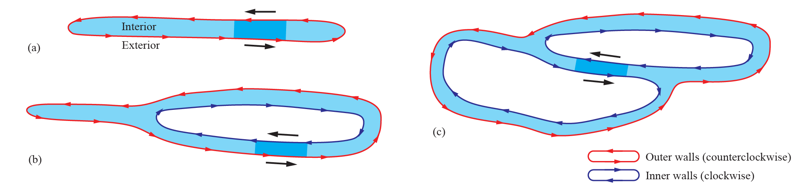
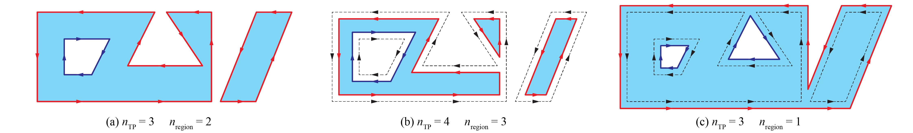
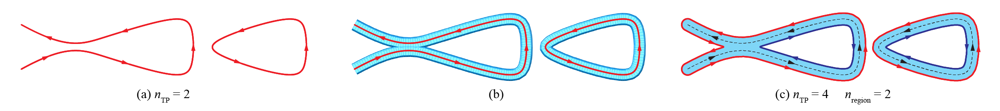
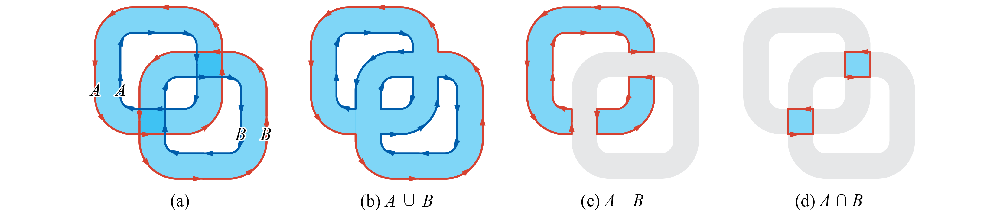
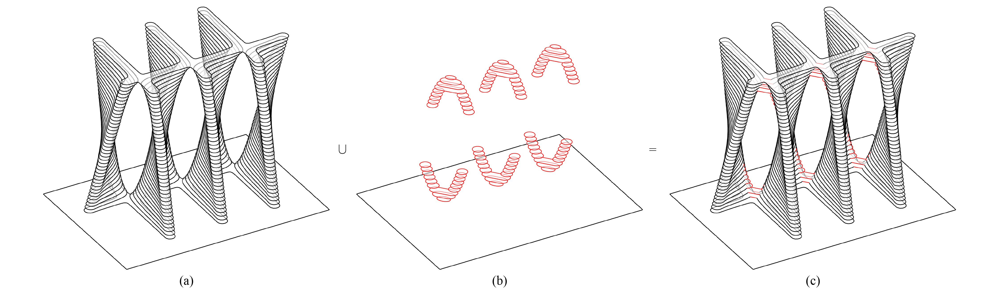

Toolpath operations
Regions
As we prefer the printing scheme to be as-continuous-as-possible to reduce seam defects, we are particularly intereseted in a Toolpath consisting of closed curves free of intersections.
Such a Toolpath would divide a planar space into the interior and the exterior. Each continuous interior part is known as a region, enclosed by a closed polygon (the outer wall) and potentially some holes inside (the inner walls). Regions are automatically solved in Ovenbird when a component needs this information. Toolpath Regions extracts the regions as trimmed surfaces. (1)
-
Example File
7. IO and Visualization → (1) Unwrapping and Wrapping

Examples of a region: (a) no holes; (b) one hole; (c) two holes. Local directions of the curve segments are uniform regardless of polylgon topologies (1)
- Image adapted from: Y. Zhi, H. Chai, T. Teng, and M. Akbarzadeh, “Local optimization of self-supporting shell structures in 3D printing: a skeleton method,” in Proceedings of IASS 2023 symposium: Integration of Design and Fabrication, Melbourne, Australia, Jul. 2023.
Ovenbird adopts the convention to orient the curves such that the outer walls are counterclockwise and the inner walls are clockwise. This gives two benefits:
- The left side of the curve is always the interior. This unites a local property with a global property.
- The directions of curves across regions and layers are aligned. This enhances the surface quality of the print.
Offsetting Toolpaths
For a Toolpath organized as regions, we can Offset Region with a specific direction.
Open Toolpath curves do not support Offset Region.

Offset region: (a) Initial layer; (b) inward offsetting; (c) outward offsetting (1)
- Image adapted from: Y. Zhi, H. Chai, T. Teng, and M. Akbarzadeh, “Automated toolpath design of 3D concrete printing structural components,” Additive Manufacturing, p. 104662, 2025.
Both open and closed Toolpath curves can be offsetted on both sides using Offset Toolpath. One application is to use the result as a "pseudo-Toolpath" whose region represented the extruded volume. See the following comparison between Visualize Printing and Offset Toolpath. (1)
-
Example File
3. Toolpath Operations → (2) Offset Toolpath

Offset toolpath: (a) initial layer; (b) visualization of extrusion; (c) offsetted toolpath
Toolpath Booleans
Organizing Toolpath curves as regions also allows layer-level Boolean operations, which can be buggy and time-consuming when performed directly on complex surface objects (meshes, breps, etc).

Booleaning two Toolpaths: (a) input; (b) union; (c) difference; and (d) intersection (1)
- Image adapted from: Y. Zhi, H. Chai, T. Teng, and M. Akbarzadeh, “Automated toolpath design of 3D concrete printing structural components,” Additive Manufacturing, p. 104662, 2025.
Two or multiple geometries (1) can be sliced separately using Co-Slice (See co-slicing) and Booleaned using Toolpath Union, Toolpath Difference, and Toolpath Intersection, thereby enabling the modeling technique of constructive solid geometry. (2) (3)
- By default,
Toolpath UnionandToolpath Intersectiontake two Toolpaths. To Boolean a list of Toolpaths, checkRight Click → Use list. -
Example File
3. Toolpath Operations → (3) Toolpath Booleans - There is also a
Join Toolpathscomponent that simply puts together several Toolpaths. It does not perform Boolean operations. Therefore the result might have intersections.

Toolpath Boolean operations, showing the regions

Example of unioning two Toolpaths to optimize the buildability and strength of a TPMS-inspired print (1)
- Image adapted from: Y. Zhi, H. Chai, T. Teng, and M. Akbarzadeh, “Automated toolpath design of 3D concrete printing structural components,” Additive Manufacturing, p. 104662, 2025.
An important application of Booleaning is to change the number of curves per layer (usually decreasing it) at uniform locations. Ovenbird features a filter that decides per layer to accept or reject the result of Booleaning according to the number of curves before and after. (1)
-
Example File
3. Toolpath Operations → (4) Toolpath Booleans with Filters
Managing layers
With Split Layers and Join Layers, a Toolpath can be divided vertically into parts that are processed separated and joined after.
Generating infills
Although the primary focus of Ovenbird is not to create toolpaths with infills, Infill offers a simple method that iteratively offsets the boundaries of a region and then connect them to form a solid infill.
Example of generating infills at bottom layers to form a box
Example File
3. Toolpath Operations → (5) Infill and Split Layers